| 病原体 | 感染経路 | 胎児・新生児への影響 | 対策 |
|---|---|---|---|
| トキソプラズマ | 経胎盤 | 水頭症・脳内石灰化・網脈絡膜炎 | 生肉・猫の糞便を避ける |
| 風疹ウイルス | 経胎盤 | 先天性風疹症候群：白内障・感音難聴・心奇形 | 妊娠前のワクチン接種（妊娠中は生ワクチン禁忌） |
| サイトメガロウイルス | 経胎盤 | 小頭症・脳内石灰化・感音難聴・肝脾腫 | 手洗い |
| パルボウイルスB19 | 経胎盤 | 胎児貧血・胎児水腫・胎児死亡 | 催奇形性はない。胎児貧血には胎児輸血 |
| 梅毒トレポネーマ | 経胎盤 | 先天梅毒（Hutchinson三徴・骨軟骨炎） | ペニシリン |
| B群溶血性連鎖球菌〈GBS〉 | 産道 | 新生児敗血症・髄膜炎 | 分娩時のペニシリン点滴 |
| 単純ヘルペスウイルス | 産道 | 新生児ヘルペス（重症） | 分娩時に病変があれば帝王切開 |
| HIV | 経胎盤・産道・母乳 | 小児AIDS | 抗ウイルス療法＋選択的帝王切開＋完全人工栄養 |
| HTLV-1 | 主に母乳 | 成人T細胞白血病（数十年後） | 完全人工栄養 |
| 選択肢 | 評価 |
|---|---|
| ａ 「HIVの確認検査を行いましょう」 | 正しい。スクリーニング陽性は偽陽性が多く、まず確定させる |
| ｂ 「妊娠中はHIVの治療は行いません」 | 誤り。妊娠中の抗ウイルス療法が母子感染予防の要 |
| ｃ 「今回は中絶することをお勧めします」 | 誤り。母子感染は予防でき、中絶を勧める理由はない |
| ｄ 「第1子のHIV検査をさせてください」 | 時期尚早。確認検査で母の感染が確定してから |
| ｅ 「パートナーのHIV検査をさせてください」 | 時期尚早。同上。偽陽性の段階でパートナーに伝えるのは不適切 |
| 病原体 | 感染経路 | 胎児・新生児への影響 | 対策 |
|---|---|---|---|
| トキソプラズマ | 経胎盤 | 水頭症・脳内石灰化・網脈絡膜炎 | 生肉・猫の糞便を避ける |
| 風疹ウイルス | 経胎盤 | 先天性風疹症候群：白内障・感音難聴・心奇形 | 妊娠前のワクチン接種（妊娠中は生ワクチン禁忌） |
| サイトメガロウイルス | 経胎盤 | 小頭症・脳内石灰化・感音難聴・肝脾腫 | 手洗い |
| パルボウイルスB19 | 経胎盤 | 胎児貧血・胎児水腫・胎児死亡 | 催奇形性はない。胎児貧血には胎児輸血 |
| 梅毒トレポネーマ | 経胎盤 | 先天梅毒（Hutchinson三徴・骨軟骨炎） | ペニシリン |
| B群溶血性連鎖球菌〈GBS〉 | 産道 | 新生児敗血症・髄膜炎 | 分娩時のペニシリン点滴 |
| 単純ヘルペスウイルス | 産道 | 新生児ヘルペス（重症） | 分娩時に病変があれば帝王切開 |
| HIV | 経胎盤・産道・母乳 | 小児AIDS | 抗ウイルス療法＋選択的帝王切開＋完全人工栄養 |
| HTLV-1 | 主に母乳 | 成人T細胞白血病（数十年後） | 完全人工栄養 |
| 選択肢 | 評価 |
|---|---|
| ａ 「影響はありません」 | 誤り。胎児貧血・胎児水腫のリスクがある |
| ｂ 「人工妊娠中絶が必要です」 | 誤り。催奇形性はなく多くは自然軽快 |
| ｃ 「白内障のリスクがあります」 | 誤り。白内障は先天性風疹症候群 |
| ｄ 「胎児貧血のリスクがあります」 | 正しい。赤芽球癆による |
| ｅ 「NIPTを行いましょう」 | 誤り。染色体異数性の検査でウイルス感染と無関係 |
| 所見 | 意味 |
|---|---|
| 子宮口2cm開大、展退度70％ | 頸管の熟化が進行している |
| 子宮収縮が5分ごと | 規則的な陣痛様収縮 |
| 少量の性器出血、褐色粘調性の分泌物 | 産徴 |
| 胎児発育・羊水量は正常、胎児心拍数に異常なし | 胎児の状態は良好 |
| 白血球10,000、CRP 0.3mg/dL、体温37.2℃ | 絨毛膜羊膜炎を強く示す所見はまだない |
| 妊娠27週0日 | 生まれれば超早産児（極低出生体重児）となる |
| 選択肢 | 評価 |
|---|---|
| ａ 「今日中に生まれます」 | 誤り。子宮収縮抑制薬で遅らせうる |
| ｂ 「帝王切開を行います」 | 誤り。頭位で胎児心拍正常。適応がない |
| ｃ 「子宮頸管をしばりましょう」 | 誤り。既に子宮口開大・陣痛があり適応外 |
| ｄ 「赤ちゃんを管理できる病院にあなたを救急搬送します」 | 正しい。母体搬送が児の予後を最も改善する |
| ｅ 「今生まれても、正期産児と同程度の発達が期待できます」 | 誤り。27週の超早産児は後遺症のリスクが高い |
| 項目 | 変化と理由 |
|---|---|
| 心拍出量 | 30〜50％増加。循環血漿量の増加と末梢血管抵抗の低下による。子宮胎盤循環を維持するための適応 |
| 腎血流量 | 約50％増加。糸球体濾過量も増加するため、血清クレアチニン・尿素窒素はむしろ低下する |
| インスリン抵抗性 | 増大。ヒト胎盤性ラクトゲン〈hPL〉・プロゲステロン・コルチゾールがインスリンの作用を減弱させる。母体が糖を使わずに胎児へ供給するための適応で、これが破綻すると妊娠糖尿病 |
| 血漿フィブリノゲン | 増加。第Ⅶ・Ⅷ・Ⅹ因子も増加し線溶は抑制される。分娩時出血に備えた生理的な過凝固状態で、裏返せば静脈血栓塞栓症のリスクが上昇する |
| 系統 | 変化 |
|---|---|
| 循環 | 循環血漿量が約40〜50％増加（赤血球増加を上回るため見かけ上の貧血＝水血症）。心拍出量は30〜50％増加。血圧は中期に最低となる |
| 呼吸 | プロゲステロンが呼吸中枢を刺激し1回換気量が増加（過換気）。その結果PaCO2は低下（32〜35Torr）し、代償性に重炭酸イオンが排泄され軽度の呼吸性アルカローシスとなる。機能的残気量は子宮による横隔膜挙上で減少 |
| 腎 | 腎血流量・糸球体濾過量が約50％増加。その結果血清クレアチニン・尿素窒素は低下する |
| 代謝 | hPL・プロゲステロンによりインスリン抵抗性が増大（妊娠後期に顕著）。母体が糖を使わず胎児へ供給するための適応。これが破綻すると妊娠糖尿病 |
| 凝固 | 凝固因子（フィブリノゲン・第Ⅶ・Ⅷ・Ⅹ因子）が増加し、線溶は抑制される（分娩時出血に備えた生理的な過凝固）。静脈血栓塞栓症のリスクが上昇 |
| 選択肢 | 評価 |
|---|---|
| ａ PaCO2 | 正しい。プロゲステロンによる過換気で低下 |
| ｂ 心拍出量 | 誤り。30〜50％増加 |
| ｃ 腎血流量 | 誤り。約50％増加 |
| ｄ インスリン抵抗性 | 誤り。hPL等により増大 |
| ｅ 血漿フィブリノゲン | 誤り。増加（生理的な過凝固） |
| 選択肢 | 検証 |
|---|---|
| ａ 尿管は腹腔内を走行する | 誤り。尿管は後腹膜腔（腹膜の背側）を走行する。骨盤内では子宮動脈の下方を交差して膀胱に至る（water under the bridge：橋（子宮動脈）の下を水（尿管）が流れる）。この位置関係のため広汎子宮全摘出術で尿管損傷を起こしやすい |
| ｂ 卵巣動脈は腎動脈から分枝する | 誤り。卵巣動脈は腹大動脈から直接（腎動脈の起始部より末梢で）分枝する。精巣動脈と相同であり、性腺が発生学的に高位（腎の近く）にあった名残 |
| ｃ 子宮円索は基靱帯の一部を構成する | 誤り。子宮円索〈子宮円靱帯〉は独立した索状構造で、子宮体部前面から鼠径管を通って大陰唇に至る。基靱帯〈基靱帯・cardinal ligament〉は子宮頸部を骨盤側壁に固定する別の構造で、内部を子宮動脈と尿管が走る |
| ｄ 子宮動脈は内腸骨動脈から分枝する | 正しい。内腸骨動脈 → 子宮動脈。基靱帯内を内側へ走り、尿管の上方を交差して子宮に至る |
| ｅ Douglas窩とは子宮と膀胱の間を指す | 誤り。Douglas窩〈直腸子宮窩〉は子宮と直腸の間で、立位・臥位で腹腔の最下部にあたる。だから腹腔内出血・腹水・膿・子宮内膜症病変がここに溜まる。子宮と膀胱の間は膀胱子宮窩 |
| 選択肢 | 評価 |
|---|---|
| ａ 尿管は腹腔内を走行する。 | 誤り。後腹膜腔を走行 |
| ｂ 卵巣動脈は腎動脈から分枝する。 | 誤り。腹大動脈から直接分枝 |
| ｃ 子宮円索は基靱帯の一部を構成する。 | 誤り。独立した索状構造 |
| ｄ 子宮動脈は内腸骨動脈から分枝する。 | 正しい |
| ｅ Douglas窩とは子宮と膀胱の間を指す。 | 誤り。子宮と直腸の間 |
| 選択肢 | 検証 |
|---|---|
| ａ 今から降圧薬を中止しましょう | 誤り。高血圧を放置すれば妊娠高血圧腎症・常位胎盤早期剝離・胎児発育不全のリスクが上昇する |
| ｂ 今から降圧薬をメチルドパに変更しましょう | 不要。メチルドパも妊娠中に安全に使える薬だが、カルシウム拮抗薬で良好にコントロールされている以上、わざわざ変更する理由がない |
| ｃ 妊娠しても現在の治療を継続しましょう | 正しい |
| ｄ 妊娠したら降圧薬を中止しましょう | 誤り。妊娠は血圧管理をより重要にする。中止は危険 |
| ｅ 妊娠したらACE阻害薬に変更しましょう | 明確な誤り・禁忌。ACE阻害薬・ARBは妊娠中禁忌 |
| 選択肢 | 評価 |
|---|---|
| ａ 「今から降圧薬は中止しましょう」 | 誤り。高血圧の放置は危険 |
| ｂ 「今から降圧薬をメチルドパに変更しましょう」 | 不要。Ca拮抗薬で良好にコントロールされている |
| ｃ 「妊娠しても現在の治療を継続しましょう」 | 正しい。Ca拮抗薬は妊娠中も使用できる |
| ｄ 「妊娠したら降圧薬を中止しましょう」 | 誤り。妊娠中こそ管理が重要 |
| ｅ 「妊娠したらACE阻害薬に変更しましょう」 | 禁忌。胎児腎障害・羊水過少を来す |
| NSAIDの胎児への影響 | 機序 |
|---|---|
| 動脈管の早期収縮・閉鎖 | NSAIDはプロスタグランジン合成を阻害する。胎児の動脈管開存はPGE2に依存しているため、NSAIDにより動脈管が早期に収縮し、胎児循環不全・新生児遷延性肺高血圧症を来しうる |
| 羊水過少 | 胎児腎血流が低下し尿量が減る |
| 分娩の遷延 | 子宮収縮が抑制される |
| 選択肢 | 評価 |
|---|---|
| ａ 羊水量を測定する。 | 不要。妊娠10週で羊水過少を評価する意味がない |
| ｂ 頭部MRIを撮像する。 | 誤り。頭痛の精査を要する所見がない |
| ｃ 人工妊娠中絶を勧める。 | 誤り。NSAID 1回の内服は中絶の理由にならない |
| ｄ 羊水染色体検査を勧める。 | 誤り。NSAIDは染色体異常を起こさない。侵襲的検査の適応もない |
| ｅ NSAIDをアセトアミノフェンに変更する。 | 正しい。妊娠後期の動脈管早期閉鎖を防ぐ |
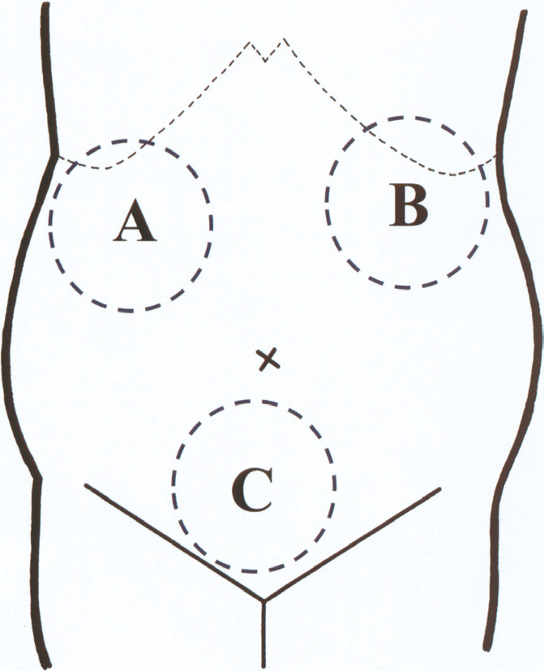
| 所見 | 意味 |
|---|---|
| 心拍数140/分、血圧68/36mmHg、不穏 | 出血性ショック |
| 分娩に伴う外出血量900mL | 経腟分娩としては多いがショックを説明しきれない |
| 腟鏡診で子宮内からの出血は少量 | 弛緩出血・産道裂傷を否定。出血は腟から出ていない |
| 子宮内に胎盤遺残や血液貯留を認めない | 胎盤遺残を否定 |
| 経腹超音波でA・B・Cの領域に大量の液体貯留 | 腹腔内（Morison窩・脾周囲・Douglas窩）に大量の血液が貯留している。すなわち腹腔内出血 |
| 40歳時に腹腔鏡下子宮筋腫核出術 | 子宮に手術瘢痕があり子宮破裂の危険因子 |
| 43歳、3妊3産、分娩誘発 | 多産・子宮収縮薬の使用も子宮破裂の危険因子 |
| 選択肢 | 評価 |
|---|---|
| ａ 輸血療法 | 正しい。出血性ショックの循環と酸素運搬能を回復させる |
| ｂ 開腹止血術 | 正しい。腹腔内出血であり開腹して止血する |
| ｃ 双手子宮圧迫 | 誤り。弛緩出血への処置。腹腔内出血には無効 |
| ｄ 子宮動脈塞栓術 | 誤り。準備に時間を要し、ショック下の腹腔内出血では開腹が優先 |
| ｅ 子宮腔内バルーンタンポナーデ | 誤り。子宮内腔の出血への処置 |
| 妊娠週数 | 標準体重 | 意味 |
|---|---|---|
| 妊娠22週 | 約500g | 生育限界（法的な早産の下限） |
| 妊娠26週 | 約1,000g | 超低出生体重児の境界 |
| 妊娠30週 | 約1,500g | 極低出生体重児の境界 |
| 妊娠34週 | 約2,000g | |
| 妊娠37週 | 約2,500g | 低出生体重児の境界／正期産の開始 |
| 妊娠40週 | 約3,000g | 正期産児の平均 |
| 選択肢 | 評価 |
|---|---|
| ａ 900g | 誤り。妊娠25〜26週ころの体重 |
| ｂ 1,200g | 誤り。妊娠28週ころの体重 |
| ｃ 1,500g | 正しい。妊娠30週の標準体重 |
| ｄ 1,800g | 誤り。妊娠32週ころの体重 |
| ｅ 2,100g | 誤り。妊娠34〜35週ころの体重 |
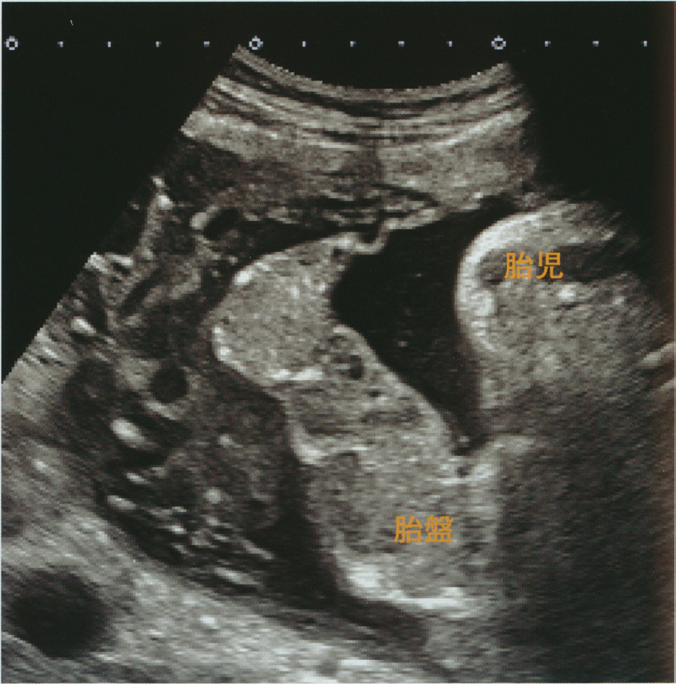
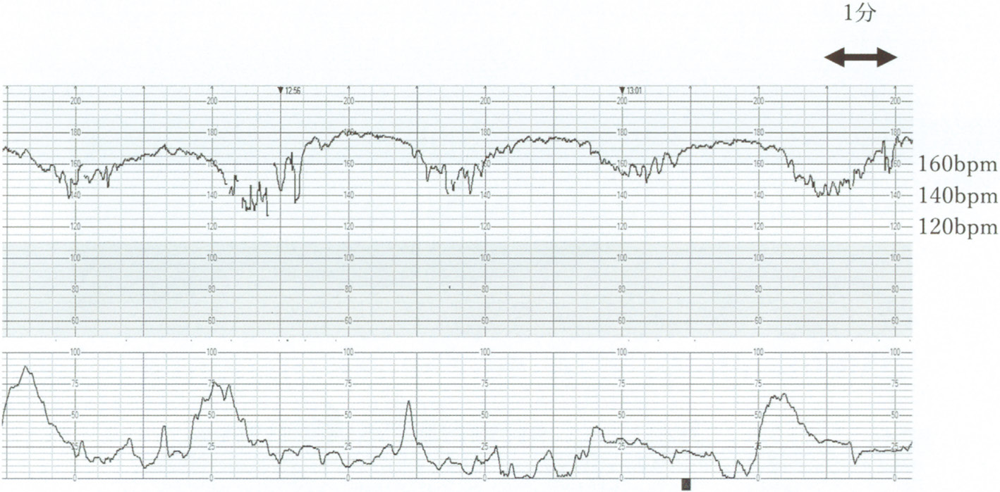
| 所見 | 意味 |
|---|---|
| 持続する下腹部痛 | 間欠のない持続痛は早剝の特徴。通常の陣痛は間欠がある |
| 血圧154/98mmHg、尿蛋白3＋ | 妊娠高血圧腎症。早剝の最大の危険因子 |
| 喫煙10本/日を15年間 | 早剝の危険因子 |
| 少量の出血 | 早剝では出血が少量でも、内部で大量に出血していることがある |
| 子宮口3cm開大 | 早剝に伴う子宮収縮 |
| 頭痛 | 妊娠高血圧腎症の中枢神経症状。子癇の前駆症状 |
| 妊娠33週0日 | 早産期だが、母児の救命が優先される |
| 選択肢 | 評価 |
|---|---|
| ａ 直ちに | 正しい。胎児死亡・母体DICを防ぐには一刻を争う |
| ｂ 頭部単純CT後 | 誤り。頭痛は妊娠高血圧腎症による。時間を空費する |
| ｃ 輸血製剤到着後 | 誤り。準備と並行して直ちに手術する |
| ｄ ベタメタゾン投与後 | 誤り。効果発現に24〜48時間を要し待てない |
| ｅ 凝固・線溶検査の結果到着後 | 誤り。結果を待つ時間はない |
| 項目 | 基準 | 本例 |
|---|---|---|
| 空腹時血糖 | 92mg/dL以上 | 本例90mg/dL → 該当せず |
| 1時間値 | 180mg/dL以上 | 本例184mg/dL → 該当 |
| 2時間値 | 153mg/dL以上 | 本例148mg/dL → 該当せず |
| 選択肢 | 評価 |
|---|---|
| ａ 運動を勧める。 | 正しい。インスリン抵抗性を改善する |
| ｂ 減量を指導する。 | 誤り。妊娠中の減量はケトーシスを招き不適切 |
| ｃ 直ちにインスリン療法を導入する。 | 誤り。まず食事・運動療法から開始する |
| ｄ 分娩6週間後に耐糖能を再評価する。 | 正しい。将来の2型糖尿病リスクが高く産後の再評価が必須 |
| ｅ 非妊婦と同じ摂取エネルギー量を指導する。 | 誤り。妊娠中はエネルギーの付加が必要 |
| 選択肢 | 評価 |
|---|---|
| ａ 24 | 誤り。生育限界の週数（22週）に近いが投与上限ではない |
| ｂ 27 | 誤り。超早産の範囲だが上限ではない |
| ｃ 30 | 誤り。上限ではない |
| ｄ 33 | 正しい。妊娠34週未満＝33週6日までが適応 |
| ｅ 36 | 誤り。34週以降は胎児肺がほぼ成熟しルーチン投与しない |
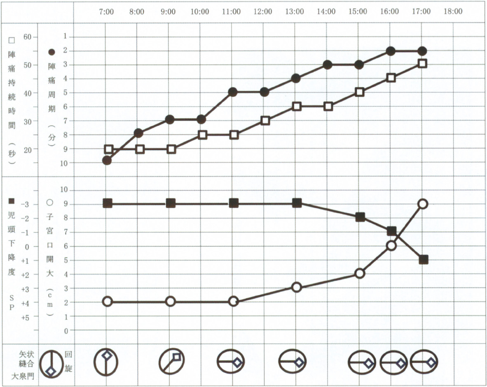
| 所見 | 意味 |
|---|---|
| 妊娠40週3日 | 正期産。早産でも過期産でもない |
| 午前5時から10分間隔の規則的な有痛性子宮収縮 → 次第に増強 | 分娩開始（陣痛発来）。順調に進行している |
| 腟鏡診で少量の血性粘液 | 産徴。正常な所見 |
| BTB紙は青変しなかった | 破水していない（羊水はアルカリ性でBTB紙を青変させる）。前期破水を否定 |
| 胎児心拍数基線150bpm（正常範囲110〜160） | 正常 |
| 基線細変動は中等度 | 胎児の中枢神経・自律神経が正常であることを示す。最も重要な指標 |
| 一過性頻脈を認める | 胎児が健常である最も確かな証拠 |
| 一過性徐脈を認めない | 胎児機能不全を示す所見がない |
| 選択肢 | 評価 |
|---|---|
| 吸引分娩 | 子宮口全開大・児頭下降が十分・胎児機能不全あるいは分娩第2期遷延という適応が必要。午後5時の時点でこれらを満たす根拠がない |
| 経過観察 | 正しい。分娩は順調、胎児心拍も正常 |
| 人工破膜 | 分娩促進の手段だが、順調に進行しているのに行う理由がない。臍帯脱出のリスクも伴う |
| 緊急帝王切開 | 胎児心拍数波形は正常であり適応がない |
| 子宮収縮薬投与 | 微弱陣痛・分娩遷延の場合に用いる。順調に進行しており不要。過強陣痛・子宮破裂のリスクを負うだけ |
| 選択肢 | 評価 |
|---|---|
| ａ 吸引分娩 | 誤り。適応がない |
| ｂ 経過観察 | 正しい。分娩は順調、胎児心拍数波形も正常 |
| ｃ 人工破膜 | 誤り。順調に進行しており不要 |
| ｄ 緊急帝王切開 | 誤り。胎児機能不全を示す所見がない |
| ｅ 子宮収縮薬投与 | 誤り。微弱陣痛ではない |
| 病原体 | 垂直感染 |
|---|---|
| サイトメガロウイルス | 垂直感染する。経胎盤感染により小頭症・脳内石灰化・感音難聴・肝脾腫。先天感染の原因として最多 |
| HIV | 垂直感染する。経胎盤・産道・母乳のすべての経路で感染しうる。抗ウイルス療法・選択的帝王切開・完全人工栄養で予防できる |
| Pneumocystis jirovecii | 垂直感染しない。免疫不全者（AIDS・免疫抑制薬使用者）に日和見感染を起こす真菌。飛沫・空気感染で伝播し、母子感染は問題にならない |
| Streptococcus agalactiae〈GBS〉 | 垂直感染する。産道感染により新生児敗血症・髄膜炎・肺炎を起こす。妊娠35〜37週にスクリーニングし、陽性なら分娩時にペニシリンを点滴する |
| Toxoplasma gondii | 垂直感染する。経胎盤感染により水頭症・脳内石灰化・網脈絡膜炎。妊娠中は生肉と猫の糞便を避ける |
| 病原体 | 感染経路 | 胎児・新生児への影響 | 対策 |
|---|---|---|---|
| トキソプラズマ | 経胎盤 | 水頭症・脳内石灰化・網脈絡膜炎 | 生肉・猫の糞便を避ける |
| 風疹ウイルス | 経胎盤 | 先天性風疹症候群：白内障・感音難聴・心奇形 | 妊娠前のワクチン接種（妊娠中は生ワクチン禁忌） |
| サイトメガロウイルス | 経胎盤 | 小頭症・脳内石灰化・感音難聴・肝脾腫 | 手洗い |
| パルボウイルスB19 | 経胎盤 | 胎児貧血・胎児水腫・胎児死亡 | 催奇形性はない。胎児貧血には胎児輸血 |
| 梅毒トレポネーマ | 経胎盤 | 先天梅毒（Hutchinson三徴・骨軟骨炎） | ペニシリン |
| B群溶血性連鎖球菌〈GBS〉 | 産道 | 新生児敗血症・髄膜炎 | 分娩時のペニシリン点滴 |
| 単純ヘルペスウイルス | 産道 | 新生児ヘルペス（重症） | 分娩時に病変があれば帝王切開 |
| HIV | 経胎盤・産道・母乳 | 小児AIDS | 抗ウイルス療法＋選択的帝王切開＋完全人工栄養 |
| HTLV-1 | 主に母乳 | 成人T細胞白血病（数十年後） | 完全人工栄養 |
| 選択肢 | 評価 |
|---|---|
| ａ サイトメガロウイルス | 垂直感染する。経胎盤感染 |
| ｂ HIV | 垂直感染する。経胎盤・産道・母乳 |
| ｃ Pneumocystis jirovecii | 垂直感染しない。免疫不全者の日和見感染 |
| ｄ GBS | 垂直感染する。産道感染で新生児敗血症・髄膜炎 |
| ｅ Toxoplasma gondii | 垂直感染する。経胎盤感染 |
| ホルモン | 作用 |
|---|---|
| プロラクチン〈PRL〉 | 乳汁の産生。下垂体前葉から分泌され、乳腺の腺房細胞に作用して乳汁を合成させる。児の吸啜刺激でPRL分泌が増加し、乳汁産生が維持される |
| オキシトシン | 乳汁の分泌（射出）。下垂体後葉から分泌され、乳腺の筋上皮細胞を収縮させて乳汁を乳管へ押し出す（射乳反射〈milk ejection reflex〉）。同時に子宮筋を収縮させ、産褥の子宮復古を促す（後陣痛） |
| 選択肢 | 評価 |
|---|---|
| エストリオール | 胎盤で産生されるエストロゲン。乳腺の発育（乳管系）を促すが、妊娠中はむしろPRLの作用を抑制して乳汁産生を止めている。乳汁の産生・分泌に直接作用するホルモンではない |
| プロゲステロン | 乳腺の腺房の発育を促すが、エストロゲンとともに妊娠中の乳汁産生を抑制している |
| プロスタグランディン | 子宮収縮・頸管熟化に関与する。乳汁とは無関係 |
| 選択肢 | 評価 |
|---|---|
| ａ エストリオール | 誤り。乳腺の発育を促すが乳汁産生は抑制する |
| ｂ オキシトシン | 正しい。筋上皮細胞を収縮させ乳汁を射出（射乳反射） |
| ｃ プロゲステロン | 誤り。妊娠中の乳汁産生を抑制する |
| ｄ プロスタグランディン | 誤り。子宮収縮・頸管熟化に関与 |
| ｅ プロラクチン | 正しい。腺房細胞に作用し乳汁を産生させる |
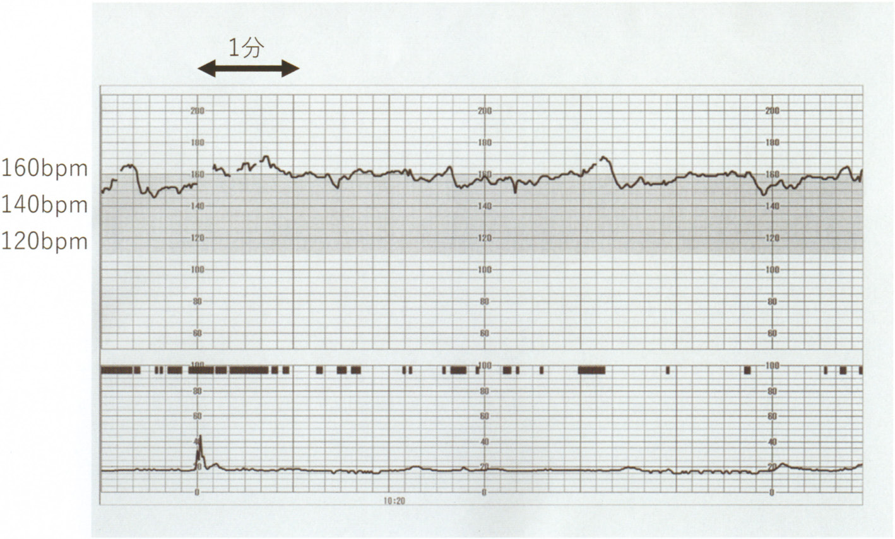
| 所見 | 意味 |
|---|---|
| 羊水指数〈AFI〉28cm（基準5〜24） | 羊水過多 |
| 妊娠24週の50gブドウ糖負荷試験が125mg/dL（基準140未満） | 妊娠糖尿病を否定。母体高血糖 → 胎児高血糖 → 胎児多尿という機序は考えにくい |
| 胎児に明らかな形態異常はない | 食道閉鎖・十二指腸閉鎖・無脳症など「胎児が羊水を飲み込めない／嚥下中枢の異常」を否定 |
| 胎児発育は正常 | 胎児水腫・双胎間輸血症候群を否定 |
| 妊娠初期・中期の血液検査は異常なし | 感染・血液型不適合を否定 |
| 37歳初妊婦、妊娠30週 | 早産となれば児の予後に大きく影響する |
| 選択肢 | 評価 |
|---|---|
| ａ 羊水除去 | 時期尚早。侵襲的で、まず頸管長と子宮収縮を評価する |
| ｂ 子宮頸管長測定 | 正しい。子宮過伸展による早産リスクをまず評価する |
| ｃ ベタメタゾン筋肉注射 | 時期尚早。早産が差し迫っていると判断してから |
| ｄ 塩酸リトドリン点滴静注 | 時期尚早。切迫早産と診断してから |
| ｅ 75g経口ブドウ糖負荷試験 | 不要。50g試験が陰性で妊娠糖尿病は既に否定されている |
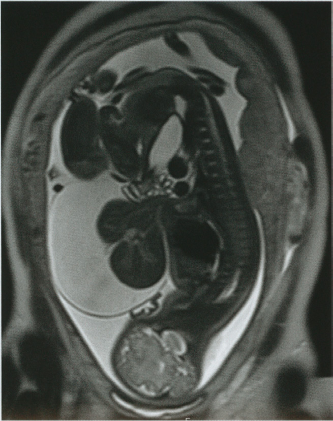
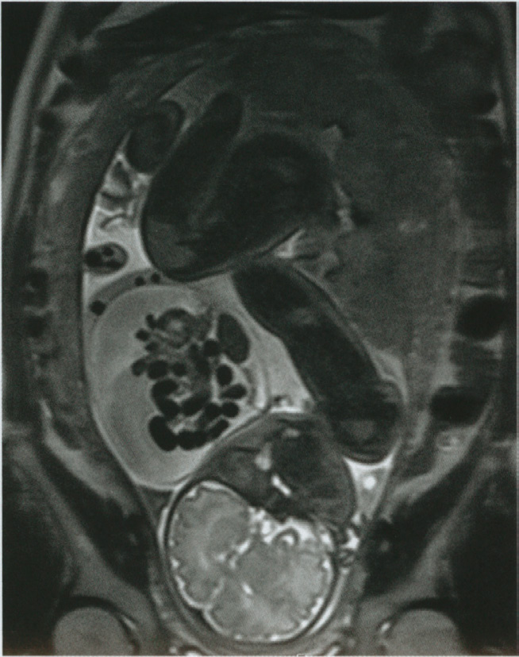
| 選択肢 | 検証 |
|---|---|
| ａ 妊娠継続は難しいでしょう | 誤り。腹壁破裂・臍帯ヘルニアともに妊娠継続は可能であり、出生後の外科治療で救命できる。予後は良好なことが多い |
| ｂ 出産は経腟分娩で行いましょう | やや不適。脱出臓器の損傷を避ける必要があり、分娩様式は施設・病態により慎重に決定する（大きな臍帯ヘルニアや肝の脱出があれば帝王切開を選ぶ）。いずれにせよ「経腟分娩で行いましょう」と断言できる場面ではない |
| ｃ 出生後直ちに処置が必要でしょう | 正しい |
| ｄ お母さんにステロイドを投与しましょう | 誤り。ベタメタゾンは早産が予測される場合の胎児肺成熟のために投与する。腹壁の欠損を治すものではない |
| ｅ 赤ちゃんの臓器の脱出は自然に戻るでしょう | 明確な誤り。腹壁の欠損は自然閉鎖せず、必ず外科的治療を要する |
| 選択肢 | 評価 |
|---|---|
| ａ 「妊娠継続は難しいでしょう」 | 誤り。妊娠継続は可能 |
| ｂ 「出産は経腟分娩で行いましょう」 | 不適。分娩様式は病態により慎重に決定 |
| ｃ 「出生後直ちに処置が必要でしょう」 | 正しい。脱出臓器の被覆・保温・輸液と外科的閉鎖が必要 |
| ｄ 「お母さんにステロイドを投与しましょう」 | 誤り。ベタメタゾンは胎児肺成熟のためのもの |
| ｅ 「赤ちゃんの臓器の脱出は自然に戻るでしょう」 | 誤り。自然閉鎖しない |
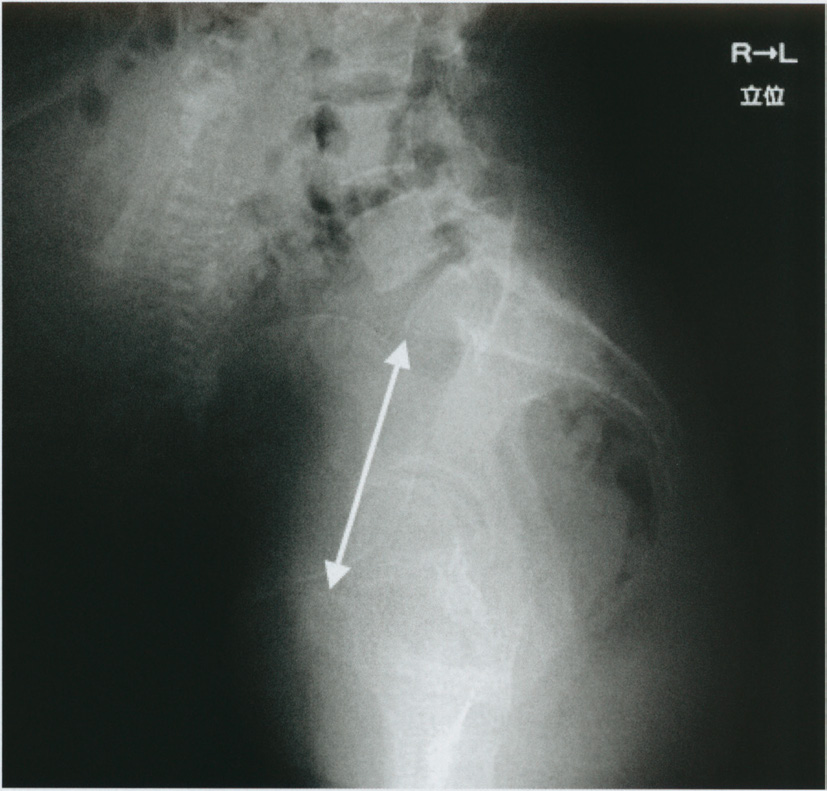
| 指標 | 値 |
|---|---|
| 産科的真結合線の正常値 | 11cm以上 |
| 狭骨盤 | 10.5cm未満 → 本例10.0cmは狭骨盤 |
| 絶対的狭骨盤 | 9.5cm未満（経腟分娩は不可能） |
| 選択肢 | 評価 |
|---|---|
| ａ 「陣痛を待ちましょう」 | 誤り。CPDでは児頭は通過できない |
| ｂ 「帝王切開が必要です」 | 正しい。狭骨盤＋大きめの児＋児頭浮動＝児頭骨盤不均衡 |
| ｃ 「分娩誘発しましょう」 | 誤り。分娩停止・子宮破裂を招く |
| ｄ 「破水させてみましょう」 | 誤り。児頭浮動下の人工破膜は臍帯脱出の危険 |
| ｅ 「もっと運動してください」 | 誤り。骨盤の大きさは変わらない |
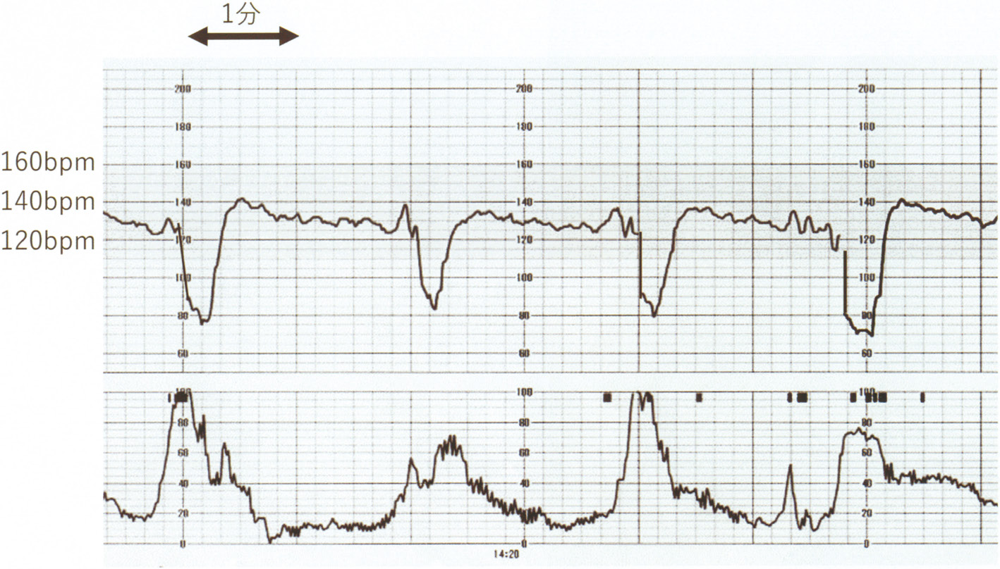
| 所見 | 意味 |
|---|---|
| 来院時：子宮口2cm開大、展退度50％、児頭下降度SP−1cm | 分娩開始時の所見 |
| 入院3時間後：子宮口7cm開大、展退度80％、児頭下降度SP＋2cm | 分娩は順調に進行している（経産婦としては良好な進行） |
| 小泉門が先進し12時方向に触れる | 前方後頭位で回旋も正常 |
| 主訴は破水感（＝破水している） | 破水後は羊水が流出し、臍帯が児頭と子宮壁の間に圧迫されやすくなる。臍帯脱出・臍帯圧迫のリスク |
| 選択肢 | 評価 |
|---|---|
| ａ 陣痛促進 | 誤り。子宮収縮を強め臍帯圧迫を悪化させる |
| ｂ 体位変換 | 正しい。臍帯圧迫を即座に解除しうる第一の処置 |
| ｃ 緊急帝王切開 | 時期尚早。体位変換で改善しうる。臍帯脱出が確認されれば直ちに適応 |
| ｄ 経腹超音波検査 | 正しい。臍帯下垂・脱出、胎位、羊水量を確認する |
| ｅ 子宮収縮抑制薬の投与 | 誤り。妊娠39週の分娩進行中で適応がない |
| 項目 | 機能性 | 器質性 |
|---|---|---|
| 機能性（原発性） | 器質性（続発性） | |
| 原因 | 器質的疾患なし。PG過剰 | 子宮内膜症・子宮腺筋症・子宮筋腫 |
| 好発年齢 | 初経後まもなくの若年（10〜20歳代） | 20歳代後半以降（ｂ「30歳以降に好発」は器質性の特徴） |
| 経過 | 年齢とともに軽快することが多い | 年々増悪 |
| 痛みの時期 | 月経初日〜2日目に一致 | 月経前から始まり月経終了後も続くことがある |
| 第一選択 | NSAID → LEP | 原因疾患に対する薬物療法・手術 |
| 疾患 | 内診所見 | MRI | 症状 |
|---|---|---|---|
| 子宮筋腫 | 弾性硬・凹凸不整に腫大、圧痛なし | 境界明瞭な低信号腫瘤 | 過多月経・貧血・圧迫症状・不妊 |
| 子宮腺筋症 | 硬く球状に腫大、圧痛あり | 接合帯のびまん性肥厚（境界不明瞭） | 強い月経困難症・過多月経 |
| 子宮内膜症 | 子宮は正常大だが可動性不良、Douglas窩に有痛性硬結 | チョコレート囊胞（T1高信号・T2低信号） | 月経困難症・性交痛・排便痛・不妊 |
| 子宮奇形 | 正常大〜変形 | 子宮腔が2つに分かれる（重複子宮・双角子宮・中隔子宮） | 不妊・不育。片側腟閉鎖を伴えば思春期からの強い月経困難症 |
| 選択肢 | 評価 |
|---|---|
| ａ 30歳以降に好発する。 | 誤り。初経後まもなくの若年に好発する |
| ｂ 手術療法が第一選択となる。 | 誤り。器質的疾患がなく手術の適応はない |
| ｃ 子宮筋腫や子宮内膜症が主な原因である。 | 誤り。それは器質性（続発性）月経困難症 |
| ｄ プロスタグランディン合成阻害薬が有効である。 | 正しい。PG過剰が本態であり、NSAIDを早期に投与する |
| ｅ 月経開始の1週間前から疼痛が始まり月経終了後も続く。 | 誤り。機能性では月経初日〜2日目に一致する |
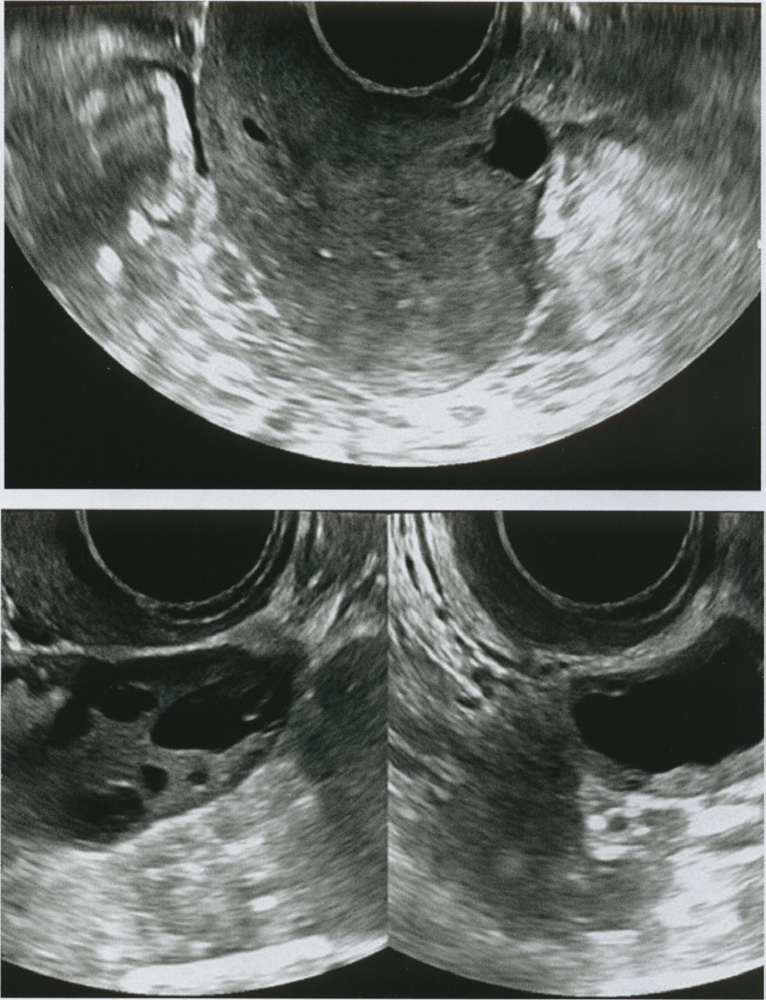
| 所見 | 意味 |
|---|---|
| 8か月前に妊娠10週で流産手術（子宮内容除去術） | 子宮内膜の基底層が損傷される契機 |
| 術後しばらく腹痛と発熱が持続（＝子宮内感染） | 感染が加わると癒着が形成されやすい |
| 流産前は月経6日間 → 現在は持続1日間に激減 | 過少月経 |
| 月経周期は28日型で整 | 排卵は保たれている |
| LH 6.2・FSH 7.8・PRL 6.6・E2 120・テストステロン42 | すべて基準内 → 視床下部・下垂体・卵巣系はすべて正常 |
| 内診で子宮は正常大、両側付属器を触知しない | 器質的腫瘤なし |
| 選択肢 | 評価 |
|---|---|
| ａ 子宮鏡検査 | 正しい。子宮腔内の癒着を直視し、同時に治療もできる |
| ｂ 腹腔鏡検査 | 誤り。子宮の外側（内膜症・癒着）を見る検査で、子宮腔内は評価できない |
| ｃ 腹部単純CT | 誤り。子宮内膜の評価には適さず被曝を伴う |
| ｄ 頭部単純MRI | 誤り。PRL 6.6ng/mLと正常でプロラクチノーマは否定的 |
| ｅ コルポスコピー | 誤り。子宮頸部の異型上皮を探す検査 |
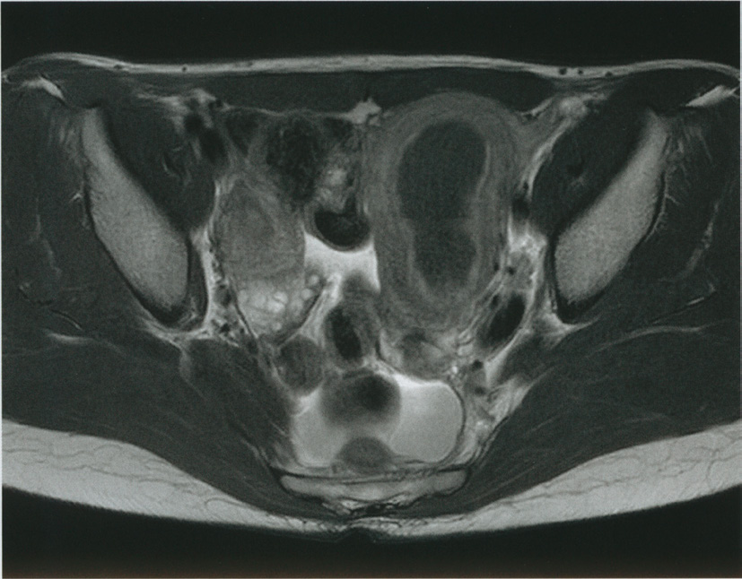
| 所見 | 意味 |
|---|---|
| 初経時より月経時の強い下腹部痛 | 初経時から強い痛みがある＝先天的な流出路の異常を示唆。子宮内膜症・腺筋症は年月をかけて進行するため、初経直後からの強い痛みは説明しにくい |
| 左腎無形成 | 決定的な手がかり。子宮・腟はMüller管、腎・尿管はWolff管に由来し、発生学的に近接して分化する。一方の異常はもう一方の異常を伴いやすい |
| 左下腹部に径10cmの圧痛を伴う腫瘤 | 閉鎖した側に経血が貯留した血腫（腟留血腫・子宮留血腫） |
| 定期的な月経はあり、経血量は正常範囲内 | もう一方（右側）の子宮・腟は開通しており正常に月経が来る。だから「無月経」にはならない |
| 付属器は触知しない | 卵巣腫瘍を否定 |
| 鎮痛薬でも効果が乏しい | 貯留した血液による物理的な圧迫が原因 |
| 疾患 | 内診所見 | MRI | 症状 |
|---|---|---|---|
| 子宮筋腫 | 弾性硬・凹凸不整に腫大、圧痛なし | 境界明瞭な低信号腫瘤 | 過多月経・貧血・圧迫症状・不妊 |
| 子宮腺筋症 | 硬く球状に腫大、圧痛あり | 接合帯のびまん性肥厚（境界不明瞭） | 強い月経困難症・過多月経 |
| 子宮内膜症 | 子宮は正常大だが可動性不良、Douglas窩に有痛性硬結 | チョコレート囊胞（T1高信号・T2低信号） | 月経困難症・性交痛・排便痛・不妊 |
| 子宮奇形 | 正常大〜変形 | 子宮腔が2つに分かれる（重複子宮・双角子宮・中隔子宮） | 不妊・不育。片側腟閉鎖を伴えば思春期からの強い月経困難症 |
| 選択肢 | 評価 |
|---|---|
| ａ 子宮奇形 | 正しい。左腎無形成の合併と初経時からの強い月経困難症 |
| ｂ 子宮筋種 | 誤り。16歳では極めて稀。月経痛より過多月経が主症状で、腎無形成とも無関係 |
| ｃ 卵巣囊腫 | 誤り。付属器を触知しないと明記されている |
| ｄ 子宮腺筋症 | 誤り。経産婦・30歳代以降に多く、初経時からの症状は説明できない |
| ｅ 子宮内膜ポリープ | 誤り。症状は不正出血で、径10cmの腫瘤も強い月経痛も来さない |
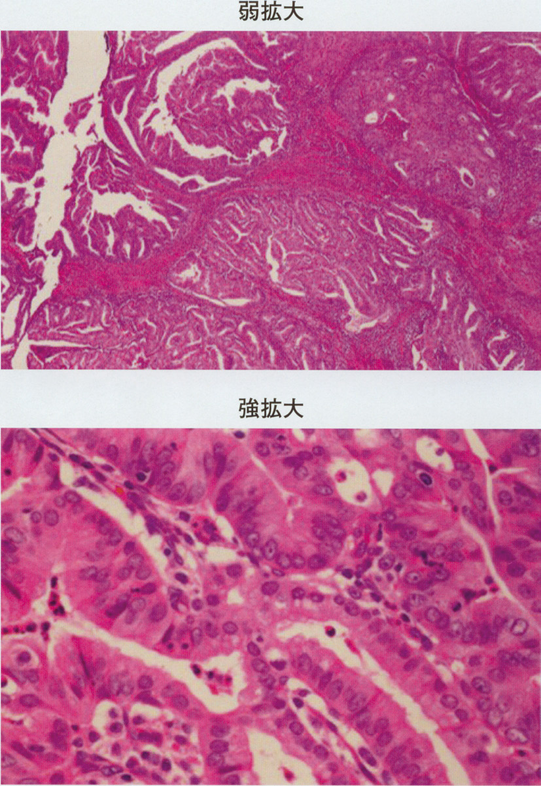
| 検査 | 評価 |
|---|---|
| 骨盤部造影MRI | 筋層浸潤の深さ・子宮頸部間質浸潤の有無を最も鋭敏に評価できる。これによりリンパ節郭清の必要性など術式が決まる。局所（骨盤内）の評価を担う |
| 胸腹部造影CT | 後腹膜リンパ節腫大・肺転移・肝転移・腹膜播種といった遠隔進展の評価を担う。遠隔転移があれば手術の適否そのものが変わる |
| コルポスコピー | 子宮頸癌の検査であり、体癌の頸部進展はMRI・子宮鏡で評価する |
| 子宮卵管造影検査 | 禁忌に近い。不妊の卵管因子を見る検査であり、癌細胞を造影剤とともに腹腔内へ押し出す危険がある |
| 子宮頸部狙い組織診 | 頸部に病変がある場合の検査。本例は頸部異常の記載がなく、体癌の進展度評価には寄与しない |
| 選択肢 | 評価 |
|---|---|
| ａ 胸腹部造影CT | 正しい。リンパ節・遠隔転移の評価 |
| ｂ 骨盤部造影MRI | 正しい。筋層浸潤・頸部浸潤の評価で術式が決まる |
| ｃ コルポスコピー | 誤り。子宮頸癌の検査 |
| ｄ 子宮卵管造影検査 | 誤り。癌細胞の腹腔内散布を招く |
| ｅ 子宮頸部狙い組織診 | 誤り。頸部異常の記載がなく進展度評価に寄与しない |
| 選択肢 | 評価 |
|---|---|
| ａ アンドロゲン | 誤り。過剰なら多毛・男性化徴候を来す |
| ｂ エストロゲン | 正しい。その欠乏が更年期障害の本態 |
| ｃ 甲状腺ホルモン | 誤り。機能亢進症は発汗・動悸を来し鑑別を要するが、更年期障害の原因ではない |
| ｄ プロゲステロン | 誤り。低下するが症状の主因ではない |
| ｅ 副腎皮質ホルモン | 誤り。更年期障害と直接の関係はない |
| 所見 | 意味 |
|---|---|
| 月経周期7日目に突然の下腹痛 | 茎捻転の典型的な発症様式。排卵期・黄体期でないため黄体出血は考えにくい |
| 左付属器に径8cmの腫瘤と強い圧痛 | 腫瘍本体と虚血による圧痛 |
| 月経困難症はない | 子宮内膜症（チョコレート囊胞）を否定 |
| Douglas窩は軟 | 腹腔内出血・内膜症を否定 |
| 体温36.4℃、白血球9,100 | 感染を否定 |
| CA19-9 56U/mL（基準37以下）と軽度上昇 | 成熟囊胞性奇形腫〈皮様囊腫〉でしばしば上昇する。茎捻転を起こしやすい代表的な良性腫瘍 |
| CA125 40U/mL（軽度上昇） | 腹膜刺激による非特異的上昇 |
| 腹腔鏡で左卵巣の腫大と540度の捻転を確認 | 診断確定 |
| 選択肢 | 評価 |
|---|---|
| ａ 卵管切除術 | 誤り。病変は卵巣であり卵管を切除する理由がない |
| ｂ 卵巣開孔術 | 誤り。多囊胞性卵巣症候群の薬物抵抗例に行う術式（腹腔鏡下卵巣多孔術） |
| ｃ 卵巣腫瘍摘出術 | 正しい。捻転解除＋腫瘍核出で卵巣と妊孕性を温存 |
| ｄ 子宮筋腫核出術 | 誤り。子宮は正常大で筋腫はない |
| ｅ 両側付属器摘出術 | 過剰。21歳の妊孕性を完全に失う |
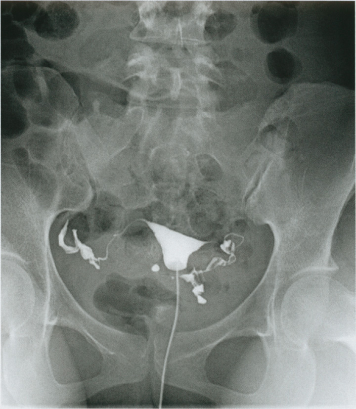
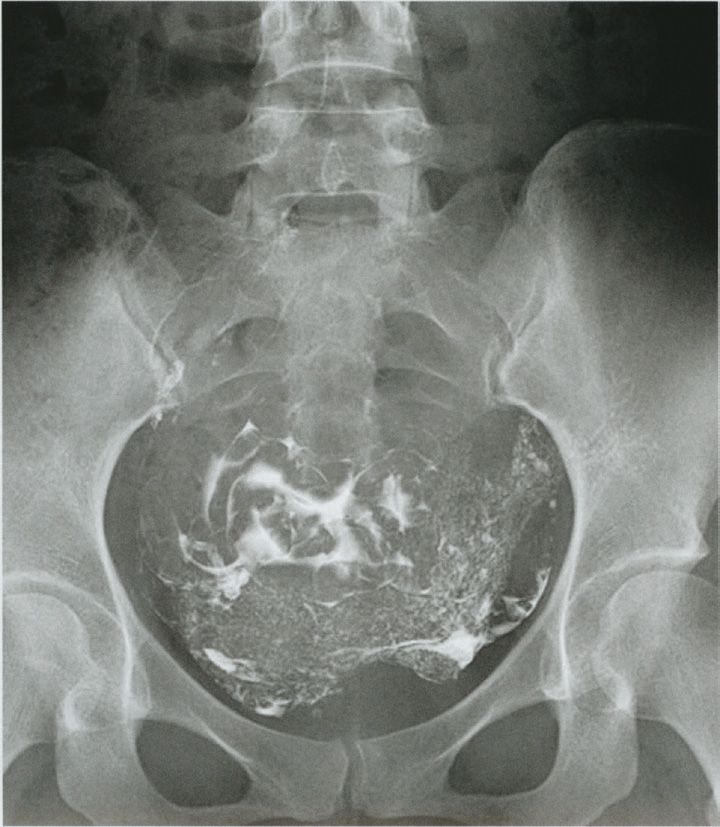
| 所見 | 意味 |
|---|---|
| 基礎体温は2相性 | 排卵している |
| LH 5.2・FSH 8.2・PRL 8.6・E2 42・テストステロン60 | すべて基準内 → 高PRL血症・PCOS・早発卵巣不全を否定 |
| 夫の精液検査は正常 | 男性因子を否定 |
| 内診で子宮は正常大、両側付属器を触知しない | 器質的疾患なし |
| 月経痛は認めない | 子宮内膜症を積極的に疑う所見がない |
| 子宮卵管造影で卵管の疎通性は良好 | 卵管因子を否定 |
| 1か月に1回程度の性交、軽度の性交痛 | 性交の頻度が少なく、タイミングが排卵期と合っていない可能性 |
| 月経周期は30〜40日型 | 正常範囲だがやや長く、排卵日が推定しにくい |
| 選択肢 | 評価 |
|---|---|
| ａ 人工授精 | 適切。性交回数が少なく性交痛もある。卵管は通っている |
| ｂ 卵管形成術 | 適切でない。卵管の疎通性は良好で治すべき病変がない |
| ｃ 性交時期の指導 | 適切。月1回の性交では排卵日と重なりにくい |
| ｄ クロミフェン療法 | 適切。排卵日を安定させ妊娠率を上げる |
| ｅ ゴナドトロピン療法 | 適切。クロミフェン無効例の次段階 |
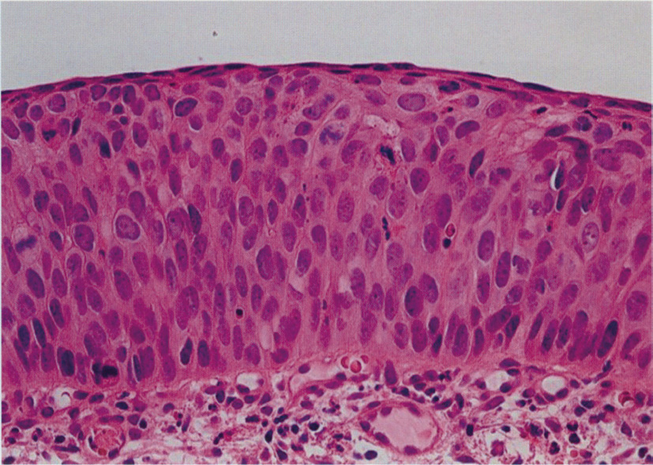
| 所見 | 意味 |
|---|---|
| 32歳、0妊0産 | 妊孕性温存が必要 |
| 検診の細胞診異常 → コルポスコピーで異常所見 → 狙い組織診 | 正しい診断の流れ |
| 自覚症状はない | 浸潤癌なら不正出血・接触出血を来すことが多い |
| 骨盤部造影MRI・胸腹部造影CTで異常なし | 浸潤癌・リンパ節転移・遠隔転移を否定 |
| 進行期 | 定義 | 治療 |
|---|---|---|
| CIN3（高度異形成・上皮内癌） | 基底膜を破っていない | 子宮頸部円錐切除術（診断と治療を兼ね子宮を温存できる） |
| Ⅰ期 | 癌が子宮頸部に限局 | 広汎子宮全摘出術／放射線 |
| ⅡB期 | 子宮傍結合組織に浸潤するが骨盤壁に達しない | 広汎子宮全摘出術／CCRT |
| ⅢB期 | 骨盤壁に達する／水腎症 | 手術適応外。同時化学放射線療法〈CCRT〉 |
| 選択肢 | 評価 |
|---|---|
| ａ 放射線治療 | 過剰。進行浸潤癌の治療。卵巣機能も失われる |
| ｂ 広汎子宮全摘出術 | 過剰。浸潤癌の術式。32歳の妊孕性を失う |
| ｃ 子宮頸部円錐切除術 | 正しい。治療・診断・妊孕性温存を同時に果たす |
| ｄ 殺細胞性薬による治療 | 誤り。上皮内病変に適応なし |
| ｅ 分子標的薬による治療 | 誤り。上皮内病変に適応なし |
| 所見 | 意味 |
|---|---|
| TSH 9.2μU/mL（基準0.2〜4.0）と高値 | 下垂体が甲状腺を刺激している |
| FT4 0.5ng/dL（基準0.8〜2.2）と低値 | 甲状腺ホルモンが不足 |
| 抗TPO抗体陽性、圧痛のない甲状腺腫大 | 橋本病〈慢性甲状腺炎〉 |
| 脈拍60/分 | 甲状腺機能低下症の徐脈 |
| 2年前から月経周期が35〜50日型・不整 | 稀発月経 |
| 基礎体温は1相性 | 無排卵 |
| PRL 15ng/mL（基準15以下） | 正常上限。甲状腺機能低下症ではTRH上昇によりPRLが軽度上昇しうる |
| 選択肢 | 評価 |
|---|---|
| 月経周期不整 | 改善が期待できる。甲状腺機能低下による排卵障害・稀発月経が是正され、排卵周期が回復する。基礎体温も2相性となり、不妊の改善も期待できる |
| 月経痛 | 改善しない。1年前からの月経痛と子宮腫大は子宮腺筋症によるもので、甲状腺とは無関係な別の器質的疾患 |
| 子宮腫大 | 改善しない。同じく子宮腺筋症による器質的変化 |
| 卵巣腫瘤 | 改善しない。びまん性高輝度エコーを呈する径7cmの腫瘤はチョコレート囊胞あるいは成熟囊胞性奇形腫であり、器質的腫瘍。薬で消えない |
| 卵管留水症 | 改善しない。右卵管膨大部の拡張と造影剤の貯留は過去の骨盤内感染などによる器質的な卵管閉塞。手術か体外受精でしか対処できない |
| 疾患 | 内診所見 | MRI | 症状 |
|---|---|---|---|
| 子宮筋腫 | 弾性硬・凹凸不整に腫大、圧痛なし | 境界明瞭な低信号腫瘤 | 過多月経・貧血・圧迫症状・不妊 |
| 子宮腺筋症 | 硬く球状に腫大、圧痛あり | 接合帯のびまん性肥厚（境界不明瞭） | 強い月経困難症・過多月経 |
| 子宮内膜症 | 子宮は正常大だが可動性不良、Douglas窩に有痛性硬結 | チョコレート囊胞（T1高信号・T2低信号） | 月経困難症・性交痛・排便痛・不妊 |
| 子宮奇形 | 正常大〜変形 | 子宮腔が2つに分かれる（重複子宮・双角子宮・中隔子宮） | 不妊・不育。片側腟閉鎖を伴えば思春期からの強い月経困難症 |
| 選択肢 | 評価 |
|---|---|
| ａ 月経痛 | 誤り。子宮腺筋症による器質的な症状 |
| ｂ 子宮腫大 | 誤り。子宮腺筋症による器質的変化 |
| ｃ 卵巣腫瘤 | 誤り。器質的腫瘍で薬物では消えない |
| ｄ 卵管留水症 | 誤り。器質的な卵管閉塞 |
| ｅ 月経周期不整 | 正しい。甲状腺機能低下による排卵障害が是正され改善する |